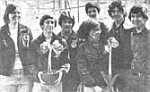
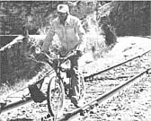

In celebration of little-known MOTHER-type folks from all over.
HERB ORANGE: A TREE GROWS IN BROOKLYN
Orchards in the Big Apple? Well, that notion doesn't sound so farfetched to folks who've been fortunate enough to meet Mr. Herb Orange. You see, from 1975 to 1978 Herb had the distinction of being the only agriculture teacher in Brooklyn, New York . . . and as such, the Edward R. Murrow High School instructor created a program that gave many inner-city youths their first exposure to horticulture.
Mr. Orange (far right in the photo) guided his students in the construction of their school's flourishing greenhouse . . . and encouraged them to take part in the organization of neighborhood tree plantings. In addition, the teenagers gained hands-on experience as they assisted workers from the National Park Service and the New York City Parks and Recreation Department in the maintenance and restoration of public grounds. As a native New Yorker, Herb has long been convinced that gardens could replace a large portion of the city's estimated 24,000 acres of vacant land . . . and his courses have already helped fill the ranks of community associations that undertake such tasks as transforming brick-and-rubble-strewn lots into productive vegetable plots.
In 1978 Herb bid farewell to the Empire State, since he'd been chosen to head the Clark College horticulture department in Vancouver, Washington. But he left behind a good many enlightened students . . . and an agriculture program that promises to continue showing the way to young urbanites of the future. - Eric Freedman.
RICHARD THOMAS: PEAT HEAT AND ALCOHOL POWER
Three years ago Richard Thomas returned to Canada from Finland with a wealth of knowledge about the Scandinavian peat industry. And, upon arriving home in Kearney, Ontario, the farmer went to work to drain his own peat bog, using the techniques he'd learned from the Finns. But the Old World process called for a year's wait, after the draining was done, before the substance could be harvested, and Richard was impatient. So, on an impulse, he set about mining the peat long before it had had time to cure properly . . . and was rewarded with countless globs of gray muck. The Canadian wasn't discouraged, however. He had a knack for improvising and promptly put it to use: Richard hung the fuel-to-be in a suspended net. Before long the material had dried and was heating both the Thomas farmstead and the Kearney Credit Union.
The experimenter's success with peat heat encouraged him to set up a small distillery, in order to turn some of his farm's crops into alcohol fuel . . . which Richard used to tool around town in his Volvo, demonstrating to local farmers that they too could grow their own power. Although Thomas found himself in court when his still was seized by the Royal Canadian Mounted Police, he emerged a winner of both his own battle and that which had long been fought by his fellow liquid-energy brewers . . . since the Canadian government was moved to reevaluate its legislation concerning the private production of alcohol fuel! - Helen Mason.
RICHARD SMART: RIDING THE RAILS
Like many folks, Richard Smart enjoys spending his leisure time pedaling around the countryside. But this sportsman's excursions are not exactly run-of-the-mill . . . because he travels from place to place by railcycle!
Originally called a railroad velocipede, the vehicle was invented - at about the turn of the century - for use in inspecting tracks and going for help when a train broke down. Smart, a Coeur d'Alene, Idaho dentist, first saw a photograph of a railcycle in 1975 . . . and, intrigued, he set out to design an updated version of the bygone mode of transportation. Dick's model - which he patented in 1980 - consists of a heavy-duty bicycle whose main wheels ride on the tracks . . . a guide wheel and two small travel wheels that lead the bike . . . and a pair of metal bars that extend from the cycle to a roller that moves along the opposite rail, helping to keep the vehicle steady (a net attached to the outrigger can hold up to 40 pounds of camping equipment or the like). Smart's velocipede can be converted into a regular bicycle for use off the tracks, adjusted to various widths of rail, and ridden - without stopping - through switches.
Richard does, of course, make it a point to stay of heavily traveled routes: He's obtained permission from several small companies to cycle along seldom used tracks, and in his more than six years of railriding has never once had a close call. "If a train comes," Dick explains, "I can get myself and my bike away from harm in a matter of seconds. I consider railcycling a much safer form of recreation than traditional bicycling." In addition, says Smart, there are thousands of miles of abandoned tracks in the U.S. (state departments of transportation can supply information about such byways). In fact, Richard would very much like to see some of those deserted lines designated as permanent railbike paths, a dream that could be fulfilled only through the cooperation of state and local authorities and railroad proprietors. Meanwhile, Dick will continue to travel cyclable railways . . . adding to the more than 4,000 miles he's already pedaled! - JV.
IN BRIEF...
MOUNTAIN STREAM MONITORS is a West Virginia water-sampling group staffed by volunteers who are concerned about the permanent damage that can result from strip mining. To prevent the loss of aquatic life caused by sulfuric acid seepage - which occurs when water passes through rock left over from coal removal - the dedicated folks at MSM are now regularly testing Mountain State waterways for high levels of acidity. In addition, MSM conducts workshops to train interested people in stream quality assessment techniques. For information, write Mountain Stream Monitors, Dept. TMEN, P.O. Box 1853, Elkins, West Virginia 26241.
Studies conducted by University of California researchers DR. ISAO KUBO and JAMES A. KLOCKE indicate that limonoids - chemicals found in the seeds, juice, and rinds of citrus fruits - markedly inhibit the growth of fall army worm and cotton bollworm larvae. To date, tests involving limonoids have focused largely on the as-yet-unsuccessful removal of the bitter-tasting chemicals from citrus products. The development of an effective method of extraction would make this "waste product" available for possible use in controlling agricultural pests.
As a VITA (Volunteers in Technical Assistance) worker based in Madras, India, JOB EBENEZER has adapted standard bicycles for use in a variety of small-farm tasks, including woodworking, rice paddy threshing, and groundnut husking. Most individuals, says Job, can pedal 80 to 100 watts of continuous power for an hour or two . . . and with periodic rest the average person is capable of producing six or more hours of cycle energy per day.
WALTER CASEY JONES - the roving advocate for the elderly who was featured in Profiles, MOTHER NO. 73 - passed away last May at the age of 110. Walter devoted most of his last decade of life to preaching his activist philosophy to senior citizens' groups across the country. - JV.
|
|
 |
 |